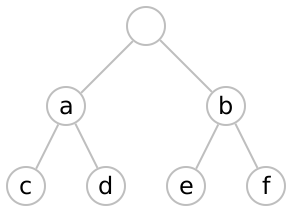

Mondrian
| (require mondrian) | package: mondrian |
Mondrian makes nicely formatted, textual tables.
1 Overview
Tables in mondrian are rectangular grids of rows and columns. The columns (and rows) may be grouped so that the whole set of columns (or rows) has a tree structure. Individual cells of the table may span several rows or columns.
> (displayln (table-pretty-print (table-col (table-row "a" "b") (table-row "c" "d"))))
a|b
-|-
c|d
> (displayln (table-pretty-print (table-col (table-row "X" (table-row (table-cell "A" #:align 'right) (table-cell "B" #:align 'right))) (table-row "Y" (table-col (table-row (table-row "a" "b") (table-row "c" "d")) (table-row (table-row "e" "f") "G")))) #:rule-maker (make-standard-rule-maker "-" "|:")))
X| A: B
-|-----
Y|ab:cd
|ef:G
Mondrian can often tell which cells span multiple rows and columns. In the example above, the cells marked ‘A’ and ‘B’ span two columns each, and the cell marked ‘Y’ spans two rows, even though these cells were not explicitly constructed as spanning cells. In addition, the cell marked ‘G’ also spans two columns even though it is not a traditional ‘column header.’
2 Creating tables
procedure
(table-cell v [ #:rowspan rowspan #:colspan colspan #:align alignment #:fill-char fill-char #:pad? pad? #:show-trim? show-trim?]) → Table? v : string? rowspan : exact-nonnegative-integer? = 0 colspan : exact-nonnegative-integer? = 0 alignment : (or/c 'left 'right 'centre) = 'left fill-char : char? = #\space pad? : boolean? = #f show-trim? : boolean? = #f
A non-zero rowspan (or colspan) will ensure that the cell spans that many lower-level rows (or columns) when it is combined into a larger table.
A cell may end up formatted to a width that is wider or narrower than the natural width of its content. When that happens, alignment controls the justification. If the width is wider than the natural width the cell is filled with fill-char; if the width is narrower than the natural width it is truncated unless show-trim? is #t, in which case some of the content is replaced with periods. (However, periods will not replace more than half the number of characters.)
If pad? is #t, an additional space is added on the non-justified side (or both sides if alignment is 'centre).
The individual cells must be coherent tables.
The individual cells must be coherent tables.
procedure
(table-rowwise-bind cells) → Table?
cells : (listof Table?)
procedure
(table-colwise-bind cells) → Table?
cells : (listof Table?)
3 Formatting tables
procedure
(table-format table) → (listof (listof string?))
table : Table?
The outcome is that the lowest-level cells will have their natural sizes whereas row and column ‘headers’ will have their size adjusted to match.
The actual rules governing the final widths of each cell are as follows (the rules governing the heights of columns are identical, mutatis mutandis). The natural width of a cell is the length of its contents; the natural height of a cell is always 1.
If this is a leaf cell, then assign it its natural width.
Otherwise, if all cells below this (in the column hierarchy) have zero width, then the cell has its natural width.
Otherwise, the cell has a width equal to the sum of its spanned columns.
procedure
(table-pretty-print table [ #:rule-maker rule-maker]) → string? table : Table?
rule-maker :
(-> exact-nonnegative-integer? exact-nonnegative-integer? char?) = (default-rule-maker)
Rules are characters which are inserted between columns and between rows. The particular character that is inserted depends upon the ‘depth’ of the rows or columns to either side. The default rule-maker is equivalent to (make-standard-rule-maker "-" "|") and inserts ‘|’ between the columns and ‘-’ between the rows; intersections use the ‘highest-level’ rule and ties are broken in favour of vertical rules.
Note that rules are not placed around the edges of the table by default. To have outside rules, the table should have empty cells to the left and right, or top and bottom.
In general, rule-maker should be a procedure that accepts two non-negative integers, the row depth and the column depth, and returns either a char? or #f. If the row depth (respectively, the column depth) is #f then the procedure should return a vertical (respectively, horizontal) separator. If both are non-false, then the procedure should return an intersection character. The procedure may return #f in which case no rule is inserted.
Internally, table-pretty-print creates a new table by splicing in cells containing the rules and then running the result through table-format.
procedure
(make-standard-rule-maker hchars vchars) → procedure?
hchars : string? vchars : string?
hchars should be a string of characters, from ‘highest’ to ‘lowest’ in the hierarchy of columns; likewise for vchars.
4 Theory
The kinds of tables that mondrian deals with are two-dimensional, rectangular arrays of cells where certain cells might span more than one row or column. However, not all such arrangements are allowed: the rows (or columns) spanned must be ‘consistent’ throughout the table. In effect, there is a tree structure on both the rows and the columns which the cells must respect. We call such a consistent structure a ‘mondrian.’
|-------+-------| |-------+-------| |
| A | B | | A | B | |
| :---+---+---| |---+---+---+---| |
| : b | c : d | | a : b | c : d | |
|---+---+---+---| |---+---+---+---| |
| e : f | g : h | | e : C : h | |
|---+---+---+---| |---+---+---+---| |
|---------+---------| |
| aA | bA | |
|----:----+----+----| |
| : dC | eC : fC | |
| cB +----+----+----| |
| : dD | eD : fD | |
|----+----+----+----| |


Any legal cell in the table is identified by a pair consisting of a node of the column structure and a node of the row structure. However, not every collection of legal cells is a legal table: the cells must (a) not overlap; and (b) cover the entire rectangular area.
Let R and C be finite trees (representing a row and column structure respectively). For, say, r_1, r_2 \in R, we write r_1 \leq r_2 if r_1 is closer to the root of the tree than r_2. Denote by R \times_\leq C the partial order on R\times C given by the rule (r, c) \leq (r’, c’) if and only if r \leq r’ and c \leq c’.
TODO: Fix the following, which is wrong.
A mondrian is a maximal antichain in R \times_\leq C. That is, a mondrian is a subset, M\subset R\times_\leq C, such that:
No two elements of M are comparable; and
Any other c\in R\times_\leq C is comparable to some element of M.
The first condition ensures that no two cells overlap; the second ensures that, taken together, the cells cover the entire table.
The functions table-row, table-col, and so on create new tables by joining existing tables, either side-by-side or top-to-bottom. Two tables joined in this way must have a consistent row- or column-structure. The tables are said to be row-wise (or column-wise) coherent if one of their row (or column) structures is a prefix of the other. In this case, mondrian extends the smaller tree from the leaves.